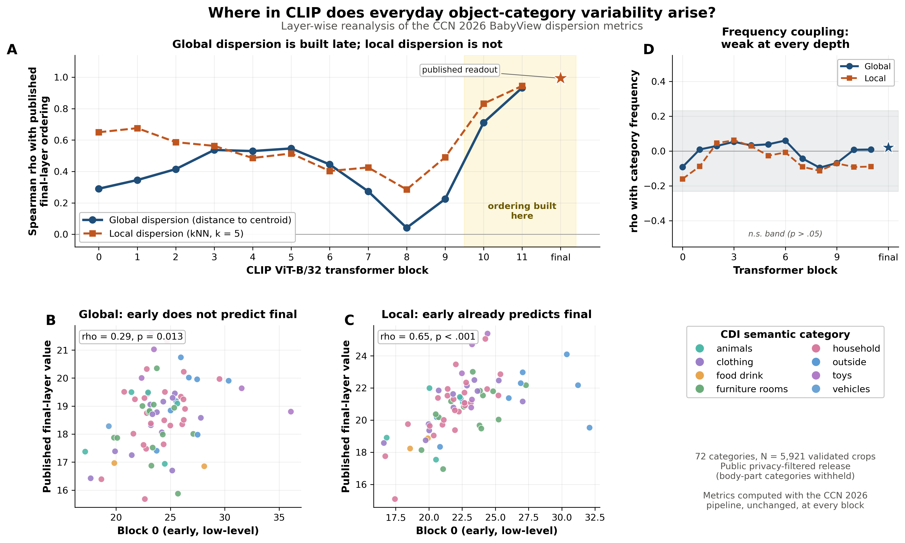

Follow-up to Yang, Sepuri, Tan, Aw, Frank & Long, Variability in Young Children's Everyday Visual Experiences of Object Categories (CCN 2026)
The CCN abstract measured how variable children's everyday object categories are, using the final CLIP embedding of 7,018 human-validated crops. But it noted a limitation: the metrics "do not distinguish between different sources of exemplar variability."
Network depth offers one handle on that. If a category's dispersion ranking is already present in the first transformer block, it is largely low-level appearance — color, texture, lighting. If it appears only in the last blocks, it is something the network constructs: a semantic or viewpoint property. So we recomputed the same dispersion metrics, with the same code, at every one of the 12 blocks.

Global and local dispersion have different origins in depth.
| Block | 0 | 3 | 5 | 8 | 10 | 11 | final |
|---|---|---|---|---|---|---|---|
| Global (distance to centroid) | .29 | .54 | .55 | .04 | .71 | .93 | .99 |
| Local (kNN, k = 5) | .65 | .56 | .52 | .29 | .83 | .95 | .99 |
The global ordering the abstract's Figure 1C rests on is essentially absent until the last two blocks — it is built at 10–11, not inherited from low-level statistics. Local dispersion is different: it already agrees at rho = .65 in block 0. Which exemplars sit near each other is partly a low-level fact; how far a category spreads overall is not.
Every crop, laid out by t-SNE of its CLIP representation at a block you choose. Drag the layer slider — or hit Play — to watch the space reorganize from early visual features to the final semantic embedding. Color by CDI semantic group or by dispersion, filter by category, and hover any point to see the crop it came from.
Everything runs from the public privacy-filtered release in
babyview-project/object-detection;
no restricted BabyView data is needed. The metric code is a verbatim copy of the paper's
valid7018_category_metrics.py, and the final-layer readout reproduces the published
per-category values at rho = .993 (global) and .994 (local).